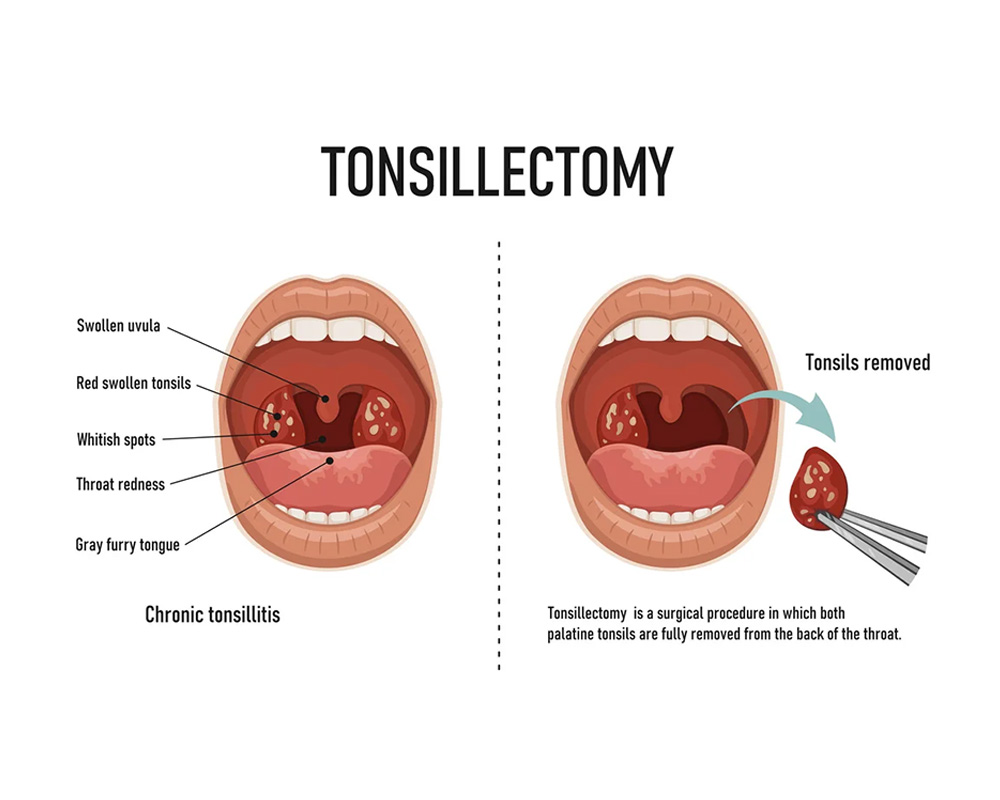

24x7 Receptionist
+919311449825Tonsillectomy Surgery is a simple and safe procedure where the swollen or infected tonsils ( Tonsils are small, soft tissues found at the back of your throat—one on each side.) are removed to stop repeated throat infections, severe tonsil pain, or breathing problems. It is also known as tonsil removal surgery, tonsil operation, or ENT tonsil surgery. This procedure helps people who suffer from chronic throat infections, sleep disturbance, tonsil stones, or difficulty swallowing.
At ORL International Hospital, Tonsillectomy Surgery is performed by highly experienced ENT surgeons, including tonsil surgery specialists who use advanced methods like laser tonsillectomy for faster healing and minimal discomfort.
Why Tonsils Get Infected?
Tonsils act as the first line of defense against germs that enter through the mouth and nose. They often get infected when bacteria or viruses grow inside them, causing swelling, redness, and pain.
Why Tonsils Get Swollen or Infected Repeatedly?
Repeated infections happen when:
-
Tonsils trap too many germs
-
The immune system becomes weak
-
There are frequent throat infections
-
Tonsil crypts develop deep pockets that hold food or bacteria
-
Tonsil stones keep forming
Chronic swelling leads to difficulty swallowing, fever, snoring, and even breathing issues.
Role of Tonsils in Immunity (Short Explanation)
Tonsils help protect the body by filtering bacteria and viruses. They play a role in early childhood immunity. However, when they become repeatedly infected, they stop functioning properly and cause more harm than good. Removing them does not weaken immunity.
Why Tonsillectomy Surgery Is Done?
Tonsillectomy is done to:
-
Stop repeated throat infections
-
Treat tonsils pain & swelling
-
Remove tonsil stones
-
Improve breathing during sleep
-
Reduce snoring
-
Treat chronic bad breath due to tonsil stones
-
Prevent future infections
Indications to Go for Tonsillectomy Surgery
You may need Tonsillectomy if you experience:
-
5–7 throat infections yearly
-
Persistent tonsil pain
-
Difficulty swallowing food
-
Recurrent fever
-
Enlarged tonsils blocking breathing
-
Sleep apnea or loud snoring
-
Tonsil stones causing discomfort
-
Chronic bad breath
-
Failure of medicines to treat tonsil infection
Do’s and Don’ts Before & After Throat Surgery
Before & After Tonsillectomy – Care Table
| Stage | Do’s | Don’ts |
|---|---|---|
| Before Surgery | Follow ENT surgeon instructions, share medical history, stay hydrated | Don’t take blood-thinning medicines without doctor approval |
| Arrange someone to accompany you | Don’t eat or drink after the advised fasting period | |
| After Surgery | Eat soft, cool foods (curd, ice cream, soups) | Don’t eat spicy, hot, or hard foods |
| Take medicines on time | Don’t shout or strain your throat | |
| Rest well and stay hydrated | Don’t smoke or drink alcohol | |
| Attend follow-up visits | Don’t skip prescribed antibiotics or painkillers |
Tonsillectomy in Children vs. Adults
Why It’s More Common in Kids?
-
Children get frequent throat infections
-
Their tonsils are more active and exposed to germs
-
Tonsil stones are more common in kids
-
Swollen tonsils cause snoring and sleep issues
Differences in Healing Time
-
Children: Heal faster (7–10 days)
-
Adults: Slightly longer recovery (10–14 days) due to stronger tissue and lifestyle habits
Risks of Tonsillectomy Surgery
Tonsillectomy is a safe procedure, but like any surgery, small risks include:
-
Mild bleeding
-
Temporary throat pain
-
Difficulty swallowing for a few days
-
Change in voice for a short time
-
Mild fever
Benefits of Tonsillectomy Surgery
-
No more repeated throat infections
-
Relief from chronic tonsil pain
-
No tonsil stones
-
Improved breathing and sleep quality
-
Fresher breath
-
Better swallowing
-
No repeated doctor visits or antibiotics
-
Better overall quality of life
Advantages of Tonsillectomy Surgery
-
Quick procedure
-
Safe and effective
-
Laser tonsillectomy available
-
Permanent solution for chronic tonsil problems
-
Faster recovery at ORL International Hospital
-
Scientifically proven improvement in lifestyle and sleep
Why Choose ORL International Hospital for Tonsillectomy Surgery?
-
Best ENT hospital in Delhi for Tonsil Removal Surgery
-
Experienced ENT surgeons for tonsillectomy
-
Advanced laser tonsillectomy technology
-
High success rate & minimal recovery time
-
Safe, painless, and patient-friendly care
-
Dedicated tonsil surgery specialists
-
Affordable tonsil operation packages
-
24×7 emergency and post-surgery care
Book Your Tonsillectomy Consultation at ORL International Hospital
Tonsillectomy Surgery is a simple and safe procedure to remove infected or swollen tonsils that cause repeated throat infections, tonsil pain, breathing issues, or tonsil stones. At ORL International Hospital, expert ENT surgeons use advanced and painless techniques like laser tonsillectomy for faster healing. The surgery helps prevent constant throat problems, improves sleep and breathing, and gives long-term relief, especially for adults and children with recurring tonsil issues.

Fill Out The Form Details Given Below To Connect With Our ORL Hospital For General Enquiry, Sugggestions, Feedback And More...
Send Email On
drdhirendrasinghent@gmail.comOur Address
Plot No. 89, Pocket 1, Jasola Vihar, New Delhi, Delhi - 110025.Download Our Package
Fill This Enquiry Form